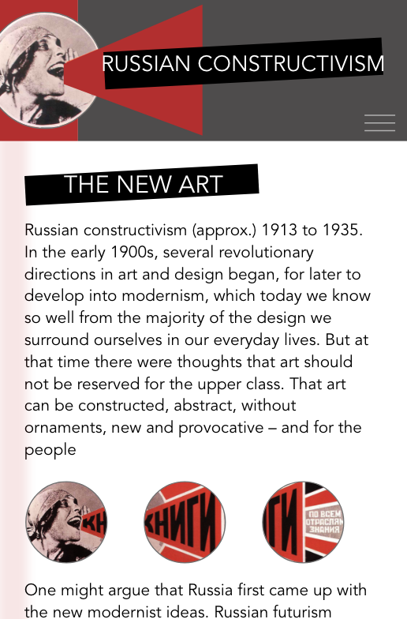
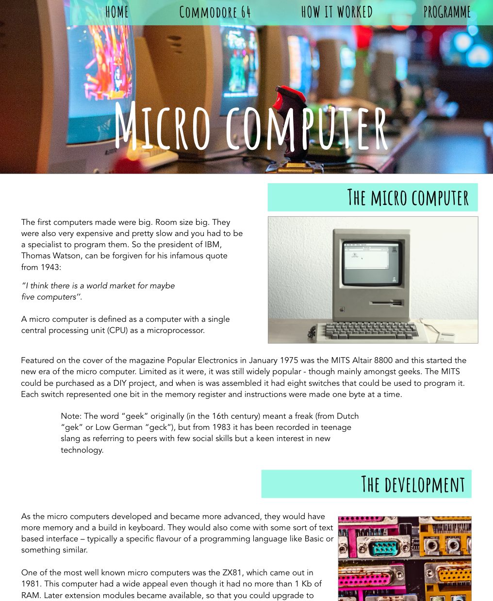
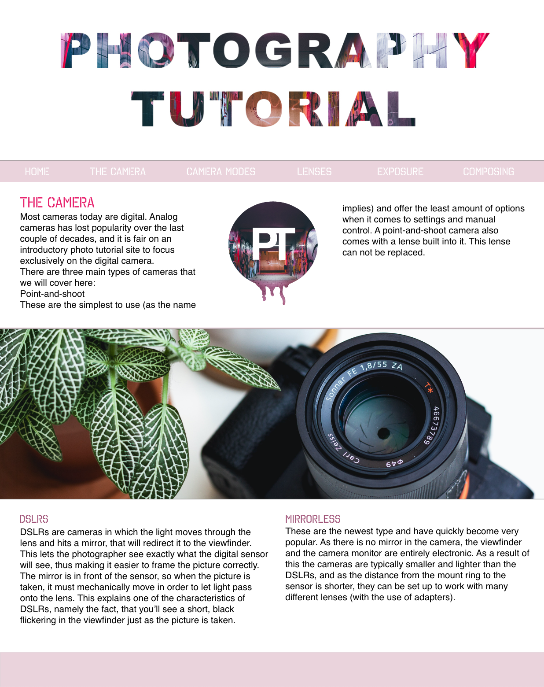

The focus for the Russian constructivism website was to build a mobile-sized webpage. This was my first real introduction to html and how to build a prototype in xd. I learned how to build the html structure, how to validate and how to edit my own pictures for the page, and of course much more.
02
BASIC WEB
In the basic web theme, we worked with different programmes and different elements
The programmes adobe XD, Brackets, Illustrator and Photoshopwere introduced. We learned the basics in these programmes to eventually build a responsive website with html and css.
02.01.01 RUSSIAN CONSTRUCTIVISM

02.02.01 THE HISTORY OF THE MICRO COMPUTER

For the history of the micro computer I had to build a website with a grid based layout with multiple pages. I learned how to use internal links and how to add a navigation to it. I also learned how to use media query’s to make my website responsive.
02.03.01 PHOTOGRAPHY TUTORIAL

For this assignment I learned how to design a website by making a moodboard, making sketches, making wireframes, making a styletile and a prototype in XD, but with consideration of the gestalt law, composition and contrast. I also learned how to make a logo in illustrator in positive and negative.